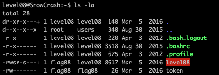
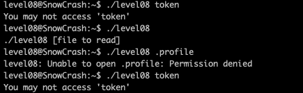
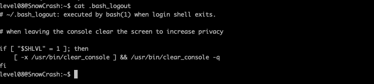
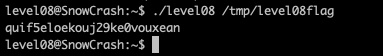
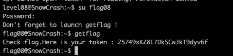

Level08
Etape 1 :
Regarder les fichiers dans le home de l'utilisateur
commande : ls -la
on peut voir un fichier Level08 et un fichier token
Etape 2 :
on execute le binaire et on teste avec differents fichiers
Etape 3 :
avec ltrace on peut voir que si le fichier ne se nomme pas token il le lit et affiche son contenu


Etape 4 :
On cree un lien symbolique entre le fichier token et un autre dans tmp
Etape 5 :
On execute le programme de nouveau
Etape 6 :
On se connecte
